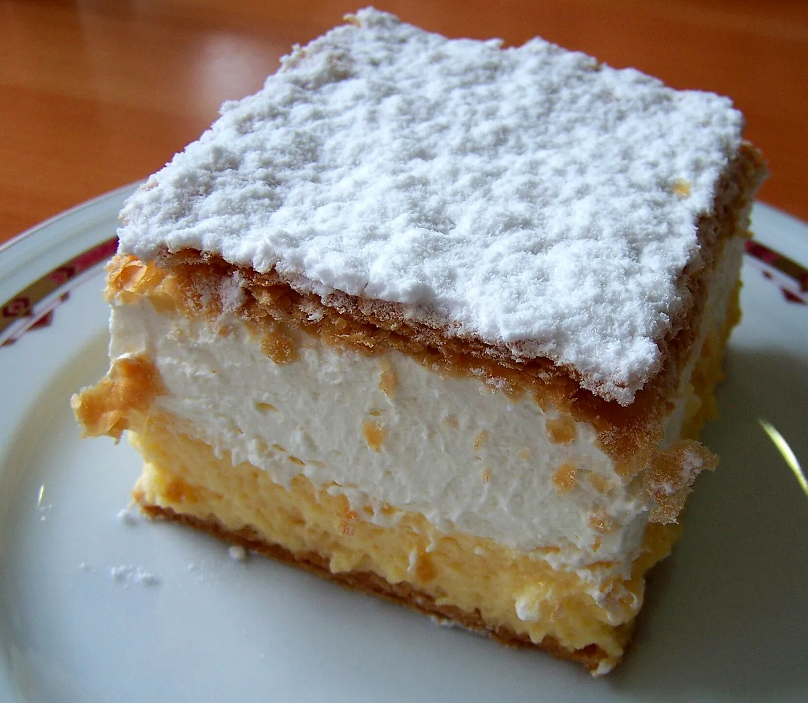

Spune ce-ți e poftă. Bunica coace.
Prăjituri de tavă după rețetele bunicii, cu unt, ouă de țară și nucă adevărată. Coacem la comandă și ți le aducem acasă.
Favoritele bunicii.
Cele mai comandate prăjituri din Timișoara. Alege bucata sau kilogramul, adaugă în coș și gata.
Pentru ce ocazie?
Câte persoane?
Platou de botez
Ce punem în tavă.
Unt adevărat,
82% grăsime.
Nici margarină, nici „produs vegetal”. Doar unt, ca în caietul de rețete al bunicii.
Ouă de țară
De la ferma din MoșnițaNucă din Banat
Spartă de mânăde la stupina familiei Ardelean, Recaș
zahăr invertit sau arome artificiale. Foile de „Albă ca zăpada” se îndulcesc doar cu miere.
„Cremșnitul are exact gustul de la bunica din Lugoj. Am comandat și pentru botez.”
Ioana M.Alegi ziua.
Noi pornim cuptorul.
Coacem doar joi, vineri și sâmbătă, câte 30 de comenzi pe zi. Rezervă un loc, apoi alegi dacă ridici din Giroc sau ți le aducem noi.
Cozonacul de Crăciun se rezervă acum.
Coacem o singură tură, 200 de cozonaci de 1 kg, în cuptorul cu vatră. Când se termină, se termină.
Mai sunt 38 de cozonaci.